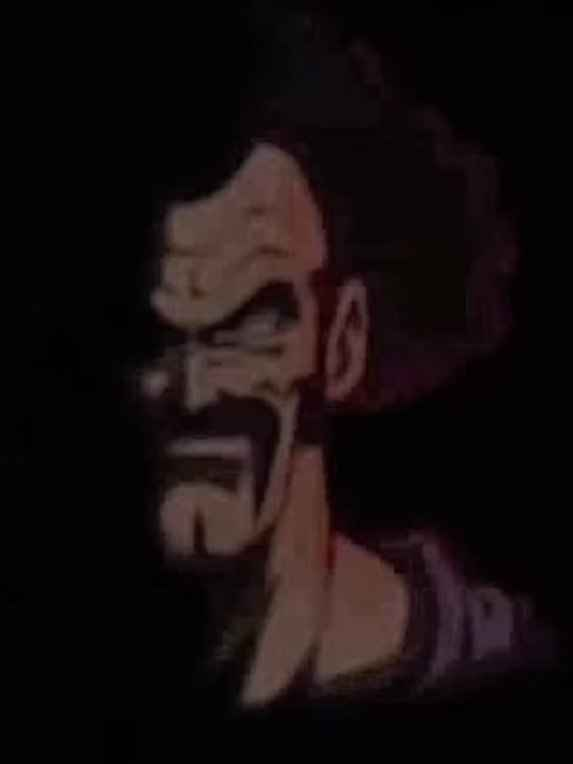

Entornos de desarrollo
Actividad 2 GIT y GitHub
INICIO
HORARIO
SOBRE MI

Datos sobre mi
Nombre: Mario
Apellidos: García Marín
Alias: Wabung
Hobbies: Ir al gimnasio, jugar videojuegos y ver series
Fecha de nacimiento: 26/04/2006